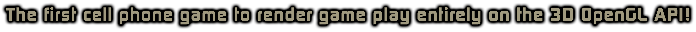
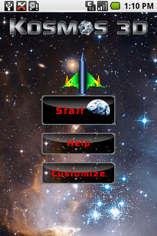
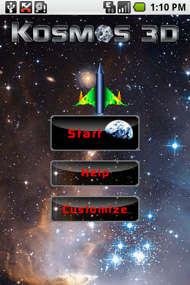
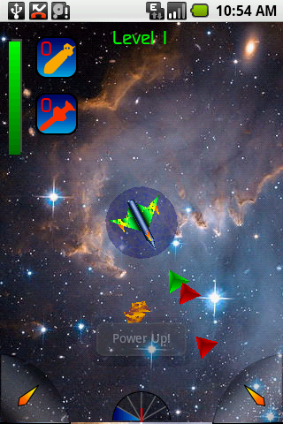
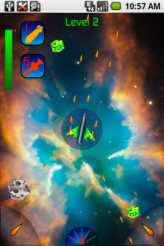
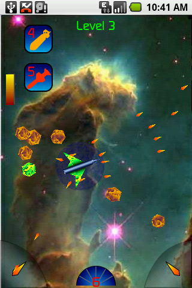
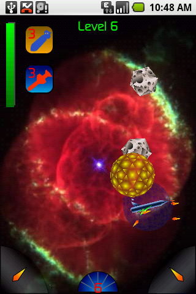
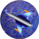
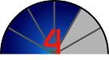

| Created by KArtists For Google Android Phones |


Player Challenge | Features | Controls | Screenshots | Powerups | How to Buy | FAQs | Development Info
Game Description
Visit spectacular star nebula to clear asteroid belts and create a galatic superhighway. See how rapidly you can clear the way through each of six
increasingly challenging and visually stunning missions. Can you destroy the asteroid belts or will they destroy you? Collect an an impressive array of Multi-Strike Phasers, Disruptor Missiles, Quantum Bombs and Ship Shields
to exterminate your adversaries. Fully customize your ship's body, wings, and weapon pods. And when you want maximum fun with the least amount of worry,
turn on Invincible Sheilds to render yourself indestructible.
Are you ready for the
game player challenge? We are convinced this game is extremely challenging. The first player to complete all six missions while scoring 2,500 points or less (without using the Invincible Shields option) will win $250! Just snap a picture of your Top 5 final score and email the photo to: playercontest@KArtists.com
Features: 
Controls:
Powerups:
How To Buy:
FAQs:
Q: What is the bar at the top left corner of the screen?
A: This is your phaser's Energy Bar. Phaser shooting costs energy which slowly regenerates over time. If the energy bar drops to the bottom (meaning you lost all of your energy), you will lose a shooting level and will temporarily be unable to fire. Use your phaser energy wisely!
Q: I'm swiping in the direction that the ship is going to make it accelerate or decelerate, and it causes me to accelerate in the opposite direction than desired.
A: Acceleration and deceleration, unlike the ship turning using the touch screen, is not relative to the ship's current heading. You swipe upwards on the touch screen to accelerate, and swipe downwards on the touch screen to decelerate the ship regardless of the ship's direction on the screen.
Q: Can I save my game after a level?
A: Yes, the Home and Back keys allow you to exit and save the game at any time after Level 1. You can also save ship customization preferences and Top 5 scores.
Q: Why would I want the lowest possible score, instead of the highest?
A: Like golf, Kosmos 3D is a low score wins game. Expert game players will clear asteroid belts in the most efficient manner possible resulting in low Top 5 scores.
If you have additional questions or want to submit an issue that you believe is a bug, please email us and provide a complete description of your issue.
KArtists, Inc.Are you ready for the
game player challenge? We are convinced this game is extremely challenging. The first player to complete all six missions while scoring 2,500 points or less (without using the Invincible Shields option) will win $250! Just snap a picture of your Top 5 final score and email the photo to: playercontest@KArtists.com
Features: 
- The first cell phone game to render game play entirely on the 3D OpenGL API!
- A total of six Multi-Strike Phaser shoot levels, each more insane than the previous.
- Array of powerups including Disrupter Missiles, Quantum Bombs, Ship Shields and more.
- Invincible Sheilds option for those who simply want to have fun destroying the most asteroids possible.
- Both touchscreen and keyboard controls available.
- Fully customizable ship - 72 unique configurations
Controls:
Touch Screen: A gentle, steady hand works best
| Swipe upwards on the screen to accelerate. | |
| Swipe downwards on the screen to decelerate. | |
| Tap around the ship to spin the ship to face the direction of your tap. | |
| Press either of two phaser icons (at the bottom left and right corners of the screen) to shoot. | |
| Tap the bomb icon to release a Quantum Bomb if you have one. | |
| Tap the the missile icon and a crosshair will appear under your finger. Drag the crosshair to the desired location of detonation. Release your finger from the screen to launch the missile. | |
| When in danger, tap the ship to HyperJump (instantly teleport to a random place in the level). |
Keyboard: Maximum control for the expert game player
- Press "W" to accelerate.
- Press "Z" to decelerate.
- Press "A" to turn left.
- Press "S" to turn right.
- Press the enter button, the space bar, or click the track ball to shoot Multi-Strike Phasers.
- Press "B" to release a Quantum Bomb if you have one.
- Press "M" to release a Disrupter Missile if you have one (missile will select a random target for destruction).
- When in danger, press "H" to HyperJump (instantly teleport to a random place in the level).
Screenshots:
|  |  |  |  |
Powerups:
|  | Shields: Create an invincible force field around your ship. Once activated, Ship Shields offer a potent yet fleeting advatage. Shields can absorb a direct hit from any size asteroid.
|
|  | Raises your Multi-Strike Phaser shooting ablity. There are six increasingly devastating phaser levels. Use phasers with caution: the higher the phaser level, the more energy is
required to fire. |
| Bomb: Gives you one Quantum Bomb. You can power up to four bombs at one time. Bombs create an explosion at the location of the ship when fired. Quantum bombs are effective defensive
weapons. |
|
| Missile: Gives you one Disrupter Missile. You can power up to six missiles at once. Missiles fired from your ship within two seconds will unfailingly hone into the targeted location. Disrupter Missiles are effective offensive weapons. |
How To Buy:
| Simply browse to the Market icon on your Google Android phone and search for Kosmos 3D under the Games application category! To learn more about the growing android application marketplace,
visit www.android.com/market |
- Works best with all Google android-based phones having Half VGA (480 x 320) screens and touchscreen support
FAQs:
Q: What is the bar at the top left corner of the screen?
A: This is your phaser's Energy Bar. Phaser shooting costs energy which slowly regenerates over time. If the energy bar drops to the bottom (meaning you lost all of your energy), you will lose a shooting level and will temporarily be unable to fire. Use your phaser energy wisely!
Q: I'm swiping in the direction that the ship is going to make it accelerate or decelerate, and it causes me to accelerate in the opposite direction than desired.
A: Acceleration and deceleration, unlike the ship turning using the touch screen, is not relative to the ship's current heading. You swipe upwards on the touch screen to accelerate, and swipe downwards on the touch screen to decelerate the ship regardless of the ship's direction on the screen.
Q: Can I save my game after a level?
A: Yes, the Home and Back keys allow you to exit and save the game at any time after Level 1. You can also save ship customization preferences and Top 5 scores.
Q: Why would I want the lowest possible score, instead of the highest?
A: Like golf, Kosmos 3D is a low score wins game. Expert game players will clear asteroid belts in the most efficient manner possible resulting in low Top 5 scores.
If you have additional questions or want to submit an issue that you believe is a bug, please email us and provide a complete description of your issue.
|
Kosmos 3D Game Development Summary: Kosmos 3D Version 1.0 extends the limits of 3D game design for smartphone platforms. Game play is rendered entirely using the 3D OpenGL API and makes extensive use of Kosmos Artists' advanced
animation engine. The gameplay experience surpasses that of any of the alternatives we've seen and will continue to improve in future versions. Wintress Technical Schools and Kosmos Artists collaberated on the game development. Jared Schrock,
Kosmos Artists founder at age 15, was the gameplay designer. The non-profit Wintress Technical Schools supplied the Java programming skills. Wintress Technical Schools is an after school program dedicated to teaching middle and high
school students Java programming skills. Special thanks go to Aaron VonderHaar, Jim Johnston and Stanley Kerdziel. Without their patience and giving nature, this game would have never have seen the light of day. |
San Diego, CA
Mail to: support@KArtists.com
www.kosmosartists.com and www.KArtists.com
Wintress Technical Schools
San Diego, CA
www.wintrisstech.org
Johnston Creative Solutions
Jim Johnston, Graphic Designer jim@johnston-creative.com
(C)Copyright 2009 Kosmos Artists and Wintriss Technical Schools. All rights reserved.